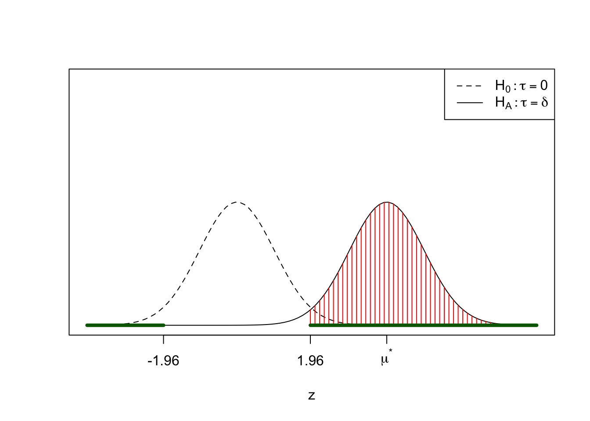

8 Sample sizes for clinical trials
In this chapter we consider the problem of how many patients to recruit to a trial. This is an important ethical issue: if a trial has little chance of providing the desired evidence because there are too few patients, it may be unethical to recruit patients to such a trial. If a trial recruits too many patients, this can result in patients being randomised to treatments (potentially receiving an inferior treatment) after sufficient evidence is available.
We have left this topic towards the end of the module, because to consider a how much data we need (how many patients to recruit), we have to know what we intend to do with the data once we get it: how the data will be analysed. The fundamental idea is to consider the hypothesis test that will be used to test if there is a treatment effect (in the case of a superiority trial), and then work out the sample size needed to achieve a desired power of the test.
Note that for hypotheses of the form \[ H_0:\tau=0, \quad H_A: \tau\neq0, \] the power will normally depend on the value of \(\tau\). The power is typically a function of various quantities, including the sample size.
We recap here the definitions of size of Type I error:
Designing a test involves a trade-off between size and power; we’d like the size to be small as possible, but the only way to have a size of 0 is to make it impossible to reject \(H_0\), and then the power would also be 0.
For some hypothesis tests, deriving a suitable expression for the power can be difficult. In this chapter, we will concentrate on the general principles, but consider simpler versions of the hypothesis tests we have used thus far. In particular, we will not consider any analyses involving covariates.
8.1 Normally distributed data
We suppose a parallel group superiority trial is to be conducted, where the primary outcome variable is assumed to be normally distributed. We suppose \(n\) patients are allocated to each group: treatment and control, with outcomes \[ X_{c,1},\ldots,X_{c,n}\stackrel{i.i.d}{\sim}N(\mu_c,\sigma_t^2) \] in the control group, and outcomes \[ X_{t,1},\ldots,X_{t,n}\stackrel{i.i.d}{\sim}N(\mu_t,\sigma_t^2) \] in the treatment group. We define \(\tau:=\mu_t - \mu_c\), and write the hypotheses of interest as \[ H_0:\tau=0,\quad H_A:\tau\neq 0. \]
The process for choosing \(n\) is as follows.
- Identify the method of analysis and hypothesis test.
Here, we suppose the data will be analysed with a two-sample \(t\)-test.
- Specify the size of the hypothesis test and identify the critical region.
The size of a test is normally chosen to be 0.05: we are willing to tolerate a 5% probability of falsely rejecting \(H_0\) when \(H_0\) is true.
At this point, it may be necessary to make some simplifying assumptions. For a two-sample \(t\)-test, our test statistic is \[ T:= \frac{\bar{X}_t - \bar{X}_c}{\sqrt{S^2_t/n + S^2_c/n}}, \] where \(\bar{X}_t,\bar{X}_c,S^2_t,S^2_c\) are sample means and sample variances in the treatment and control groups. For a test of size 0.05, the critical region is given by \(T>t_{\nu;0.025}\) and \(T<t_{\nu;0.975}\) where \(t_{\nu;0.975}\) and \(t_{\nu;0.025}\) are the 2.5th and 97.5th percentiles of the Student-\(t\) distribution with \(\nu\) degrees of freedom.
But the expression of the degrees of freedom \(\nu\) depends on the sample size \(n\), which is going to make the algebra difficult for us! So the first simplifying assumption we make is that the \(t_{\nu}\) distribution can be approximated by the \(N(0,1)\) distribution, which is reasonable if \(n\) is large enough.
So this gives us a critical region where we reject \(H_0\) if \(T>Z_{0.025}=1.96\) or if \(T<Z_{0.975}=-1.96\).
- Choose the desired power of the test.
Recall that this is the probability of rejecting \(H_0\) when \(H_0\) is false; if there really is a treatment effect. The convention is to aim for power between 80% and 90%. We will choose 80% in this example. We use the notation of denoting the probability of a Type II error by \(\beta\), so the power is \(1-\beta = 0.8\)
- Specify the minimum clinically relevant difference
For a superiority trial, we want to demonstrate that the treatment is more effective than the control. If it is more effective, but only by some tiny margin, then it is unlikely the treatment would be used in clinical practice, because it typically would involve extra cost, for no worthwhile benefit.
We suppose that the larger the treatment effect \(\tau\) is, the better the treatment is compared to control. We denote the MCID by \(\delta\). For \(0<\tau<\delta\), we suppose that failing to reject \(H_0\) is no worse than rejecting \(H_0\) and discovering \(\tau<\delta\), because in either case, the treatment wouldn’t be used in practice.
- Derive the distribution of the test statistic in the case \(\tau=\delta\), and find the power: the probability the test statistic will fall in the critical region.
To simplify the algebra, we need to make another assumption: we suppose the two variances \(\sigma^2_c\) and \(\sigma^2_t\) are known, and equal to a common value \(\sigma^2\). In practice, this typically means using data from other published trials to obtain an estimate of \(\sigma^2\).
With this assumption, we can switch from a two-sample \(t\)-test to a \(Z\)-test (a test using a normal distribution). Our test statistic is
\[ Z:= \frac{\bar{X}_t - \bar{X}_c}{\sqrt{\sigma^2/n + \sigma^2/n}}\sim N(\mu^*,1), \] with \[ \mu^* = \frac{\delta}{\sqrt{2\sigma^2/n}}. \]
Now we need to work out the power. This is the probability of \(Z\) lying in the critical region, where \(Z\sim N(\mu^*,1)\):
So if the desired power is \(1-\beta\), then we have \[ 1-\beta =P(Z< -1.96) + P(Z>1.96), \] We assume that \(\delta\) is large enough such that \(P(Z< -1.96)\simeq 0\). Now we have \[\begin{align*} 1-\beta &= P(Z>1.96)\\ \Rightarrow P(Z\le 1.96) &= \beta\\ \Rightarrow P\left((Z-\mu^*)\le (1.96-\mu^*\right) &= \beta\\ \Rightarrow 1.96-\mu^*&=\Phi^{-1}(\beta), \end{align*}\] where \(\Phi^{-1}(.)\) is the inverse CDF of the \(N(0,1)\) distribution. For 80% power, we have \(\beta=0.2\) and
qnorm(0.2)[1] -0.8416212Hence \[\begin{align*} \mu^* &= \frac{\delta}{\sqrt{2\sigma^2/n}} \simeq (1.96 + 0.841)\\ \Rightarrow n &\simeq \frac{2(1.96+0.841)^2\sigma^2}{\delta^2} \end{align*}\]
In general, for a test of size \(\alpha\) and desired power \(\beta\), we choose the sample size \(n\) per group as \[
n =\frac{2\left(\Phi^{-1}(1-\alpha/2)-\Phi^{-1}(\beta)\right)^2\sigma^2}{\delta^2}=\frac{2\left(\Phi^{-1}(\alpha/2)+\Phi^{-1}(\beta)\right)^2\sigma^2}{\delta^2}
\] A more precise result can be obtained in R using the power.t.test() function. This function does not use the simplification we made of approximating the \(t\)-distribution with the normal distribution, but it needs to use numerical methods to find \(n\). This relates to the discussion in step 2 above, where the degrees of freedom parameter in the \(t\)-distribution depends on \(n\).
8.2 Binary data
Here, we again consider a simplified analysis, where we do not consider any covariates. We suppose that
- the number of ‘successes’ \(X_c\) in the control group has the \(Binomial(n, \theta_c)\) distribution;
- the number of ‘successes’ \(X_t\) in the treatment group has the \(Binomial(n,\theta_t)\) distribution;
- once the data are obtained, we test the hypothesis \(H_0:\theta_c = \theta_t\), using a two sample \(Z\)-test, assuming the sample proportions \(X_c/n\) and \(X_t/n\) are normally distributed.
We follow the same approach before of specifying the desired power of the test and deriving the required sample size. Two differences are
- we first specify \(\theta_c\), for example using historical data, and then set \(\theta_t = \theta_c+\delta\), where \(\delta\) is the minimum clinically important difference;
- there is no separate variance parameter to estimate; variances are determined once \(\theta_c,\theta_t\) and \(n\) are specified.
We won’t work through the derivation here, but it is similar to the normally distributed case above. We obtain
\[ n =\frac{\left(\Phi^{-1}(\alpha/2)+\Phi^{-1}(\beta)\right)^2(\theta_c(1-\theta_c)+ \theta_t(1-\theta_t))}{\delta^2} \] As before, we might inflate this number if we expect patients to drop out of the trial.
8.3 Survival data
We consider sample sizes for two group comparisons analysed with the log-rank test. Here, the minimum clinically important difference \(\delta\) needs to be specified as a hazard ratio. Again, we won’t consider the derivation, but it can be shown that the total number of events across both groups (where the event could be a patient death, or some other outcome that we wait to observe) to achieve power of \(1-\beta\) assuming a test of size \(\alpha\) is \[ d = \frac{4\left(\Phi^{-1}(\alpha/2)+\Phi^{-1}(\beta)\right)^2}{\left(\log \delta\right)^2} \] The complication here is that the number of events is not the same as the number of patients: a patient could survive to the end of the trial, for example.
If we recruit \(n\) patients per group, and \(p_1\) and \(p_2\) are the probabilities of an event for a patient in each group respectively, then the expected number of events in total is \(np_1 + np_2\). If we equate this to the required number of events, we get \[ n = \frac{d}{p_1+p_2} \]
8.3.1 Estimating the probabilities of an event
We make some assumptions and specify some further trial characteristics to estimate \(p_1\) and \(p_2\).
We suppose that for a patient in the control group, their time to event has an exponential distribution with rate parameter \(\lambda_1\).
We suppose that for a patient in the treatment group, their time to event has an exponential distribution with rate parameter \(\lambda_2\).
As we have already assumed a hazard ratio of \(\delta\) (hazard for treatment / hazard for control), we have \(\lambda_2 = \delta \lambda 1\).
We use historical data to estimate \(\lambda_1\).
We suppose there is a recruitment period lasting \(a\) units of time, and than patients arrive uniformly during the recruitment period.
The trial concludes after \(a+b\) units of time: events can be observed at any time between 0 and \(a+b\), but not after \(a+b\).
For a patient allocated to group \(i\), we suppose they enter the trial at some random time \(R\), with \(R\sim U[0,a]\). Given \(R=t\), the remaining time for a patient to have the event is \(a+b-t\). If \(T\) is their time to event, with \(T\sim exp(rate = \lambda_i)\), then we require \(T\le a+b-t\).
Their probability of an event \(p_i\) is \[\begin{align*} p_i& =\int_0^af_R(t)Pr(\mbox{event before } a+b | \mbox{entered at time }t)dt\\ &=\int_0^a\frac{1}{a}Pr(T\le a+b-t)dt\\ &=\int_0^a\frac{1}{a}(1-\exp(-\lambda_i(a+b-t))dt\\ &=1 - \frac{\exp(-\lambda_i b)}{a\lambda_i}\left(1-\exp(-\lambda a)\right) \end{align*}\]